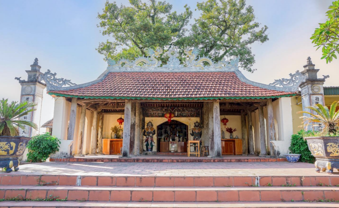

Di tích lịch sử linh thiêng
༺❦༻
Đình Thanh Trà là nơi thờ Đức Thánh Dương Tự Minh,
vị anh hùng dân tộc có công lớn trong lịch sử triều Lý
và bảo vệ biên cương phía Bắc Đại Việt.
Sơ lược về di tích lịch sử Đình Thanh Trà
Đình Thanh Trà là cơ sở tín ngưỡng di tích lịch sử văn hóa thuộc loại hình kiến trúc nghệ thuật.
Đình là nơi thờ tự Đức Thánh Dương Tự Minh, danh nhân lịch sử dân tộc,
quê ở Quan Triều, phủ Phú Lương xưa (nay là phường Quan Triều, thành phố Thái Nguyên).
Sau khi Dương Tự Minh hiển thánh tại núi Đuổm, nhân dân ở khắp nơi đã lập Đình,
Đền thờ ông để tỏ lòng thành kính và ghi nhớ công lao to lớn của ông đối với dân, với nước.
Đình Thanh Trà được xây dựng từ lâu đời, qua thời gian dài tồn tại,
Đình được các đời phong kiến nhà Lý, nhà Nguyễn ban sắc phong.
Đến khoảng thế kỷ XVIII Đình được tôn tạo khang trang hơn,
tường gạch, mái ngói, gồm 3 gian, 2 trái thuộc xóm Thanh Trà 1.
TÓM TẮT TIỂU SỬ ĐỨC THÁNH DƯƠNG TỰ MINH
Dương Tự Minh là người dân tộc Tày, quê ở Quan Triều phủ Phú Lương,
thời nhà Lý nay thuộc phường Quan Triều, thành phố Thái Nguyên.
Ông sinh ra trong một gia đình nghèo khó, bố mất sớm,
từ nhỏ đã phải tự kiếm củi, bắt cá để nuôi mẹ già.
Là người thông minh, cần cù, hay giúp đỡ người nghèo khó,
nên ông được nhân dân trong vùng yêu mến.
Cuộc đời của Dương Tự Minh gắn liền với lịch sử Vương triều Lý
hồi nửa đầu thế kỷ XII. Ông là người đức độ, tài giỏi,
có công lớn phụng sự ba triều nhà Lý,
bảo vệ vùng biên cương phía Bắc Đại Việt,
đoàn kết các dân tộc thiểu số,
đánh đuổi ngoại xâm và giữ vững chủ quyền quốc gia.
Sau hơn 30 năm phò tá triều đình,
Dương Tự Minh là danh tướng duy nhất trong lịch sử dân tộc
được hai lần phong làm phò mã:
công chúa Diên Bình năm 1127
và công chúa Thiều Dung năm 1144.
Cuối đời, ông về ở ẩn dưới chân núi Đuổm
và mất tại đó.
Công lao và sự nghiệp của ông
được nhiều triều đại phong kiến ghi nhận,
trở thành biểu tượng lịch sử - văn hóa lớn của vùng trung du miền núi phía Bắc.